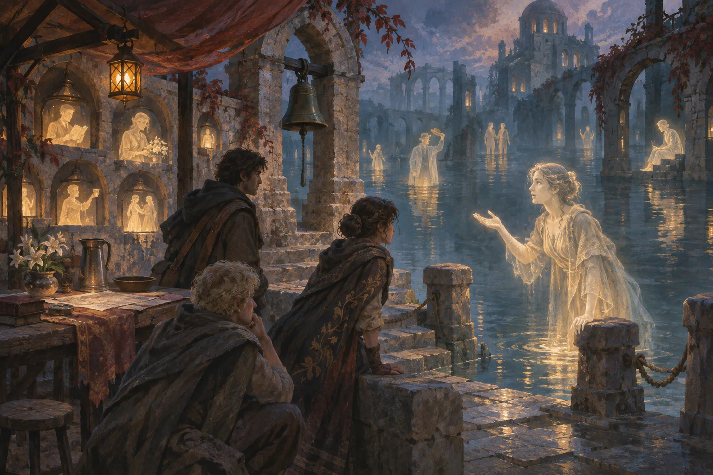
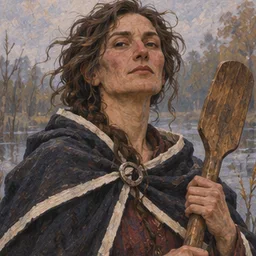
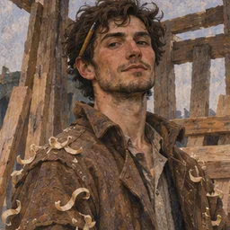
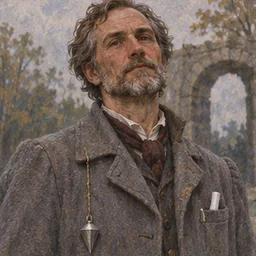
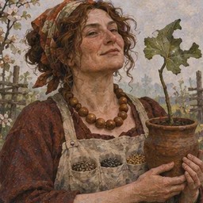
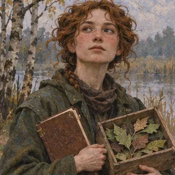
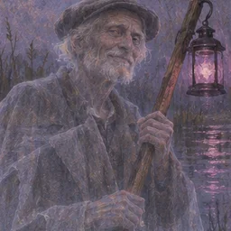
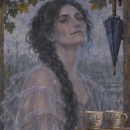
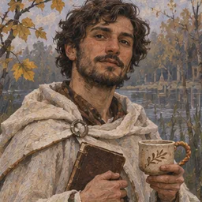

Вечер 1
Фонарь, который ответил
Замечать отличие точной записи от нового ответа и выбрать добровольный способ расследования.
Открыть сценарий →В затопленной Велини фонари показывают тех, кого давно нет. Большинство образов повторяет знакомые жесты, но одна женщина вдруг задаёт вопрос, которого никогда не было в её прошлом. За восемь вечеров герои выяснят, кто способен услышать ответ, почему чужая память не позволяет призраку измениться и можно ли помочь умершему начать собственную историю, не обещая живым возвращения прежней жизни.

Перед чтением вступления сверьте место героев, присутствующих людей и предметы с итогом прошлого вечера. Если условия встречи отпали, сыграйте последствия там, где находится партия. Событие по расписанию может произойти за кадром. Герои узнают о нём от тех, кто был на месте.
Дайте игрокам выбор между просьбой остаться наедине и уходом. Оба оставляют её решение в силе. В эпилоге паромщик сможет повторить лишь слова, которые Сена разрешила ему услышать.
Повторять последнюю встречу не будем. Подождём на берегу и вернём лишь вещи, которые у нас попросили. Отвечаем с берега тому, кто сам попросил вещь. Лунный прилив спадает. Несказанная реплика остаётся несказанной; на берегу ждёт человек, которому можно написать живое письмо.
Попросим выбрать другой жест и сравним ответ со временем появления подписи. Доступные свидетельства — Новый выбор после зонта, Подпись, появившаяся позже. Слова об отсутствии желаний появились в пересказе. Сена запоминает новый опыт, значит её можно спросить о нынешнем выборе. Просим Сену выбрать вопрос, которого прежде не слышала. Вода хранит запись, но собеседница способна ответить иначе. Отдаём ей право решить, читать ли позднюю подпись вслух.
Фарфоровый свет оттесняет нас с отражённой улицы, один отлив упущен. Кладём на берегу записку с нашим собственным вопросом. Оставляем собственную записку на берегу. Следующий прилив приносит возможность встречи, но не обязан вернуть пропущенную минуту.
Для игры без подготовки: что говорят люди, места в стороне от главной дороги и прохожие. Пометки о правде слухов — только для ведущего; сказанное за столом становится фактом мира, лишь когда вы его подтвердите.
«Лунный прилив приходит раз в жизни, не чаще. Пока вода гладкая, как стекло, улицы старой Велини открыты, а пойдёт по ней рябь — и всё закроется до следующего раза».
Отчасти правда. Прилив и правда редкий и раскрывает отражённую Велинь на восемь вечеров; рябь ничего не закрывает. Если до конца окна повтор Сены не разомкнут, она не погибает: общение станет реже до следующего прилива. Слух напоминает о сроке без спешки и таймера.
«Фонарь памяти забирает то, что в него вложишь. Отдал ему минуту — и сам её больше никогда не вспомнишь».
Неправда. Неправда: фонарь хранит копию добровольно записанного впечатления, а своя память остаётся у человека. Так пугают новичков у Колокольного причала; Мара или любой фонарщик спокойно поправят. Слух помогает отделить память от записи.
«На заводи не свистят. Свистнешь — эхо вернёт тебе свист чужим голосом, и потом полночи гадаешь, чьим».
Правда. Примета Сумеречной заводи, и она верна, особенно под арками Паромного хора. Вреда в этом нет, только неуютно. Хорошая деталь для лодочника или для первой поездки вдоль старых крыш.
«Кто заговорит с оконным образом, того он утянет к себе на дно. Потому в синее окно и смотрят только с причала».
Неправда. Суеверие. Образы повторяют записанные минуты и никого не утягивают, а с причала смотрят просто потому, что так удобнее. Сена вправе молчать или отказаться от разговора. Если стол тревожится, Брен или Мара развеют слух в вечере 1 или 4.
«Брена у Паромного хора про смерть не спрашивайте. Про птиц он вам расскажет хоть до утра, а про это — нет».
Правда. Так и есть: Брену наскучило, что живые спрашивают только о смерти (вечер 4). Слух готовит героев к его просьбе и показывает, что призрак вправе выбирать тему. О том, что покажет паром, он ничего не выдаёт.
«Под синим окном сажают белые цветы. Это её любимые были, вся Велинь знала».
Отчасти правда. Белые под синим окном и правда сажают, а любимыми их назвали позже: при жизни Сене не нравился их запах (вечер 3, Ильда). Не раскрывайте этого раньше Висячего сада; слух лишь показывает, как красивая легенда живёт без своей хозяйки.
«В Доме незакрытых дверей двери не закрываются. Прикроешь одну — а на следующем круге она опять стоит нараспашку».
Правда. Правда: дом повторяет одну минуту, и прикрытая дверь возвращается к прежнему виду. Это примета повтора, а не угроза и не ловушка. Слух можно пересказать у колодца в вечер 5 или 8.
«Разобьёшь памятный фонарь — и тот, кто в нём живёт, умрёт второй раз. Потому их никогда и не гасят».
Неправда. Неправда. Погашенный или разбитый фонарь теряет только изображение; Сена не погибает и может найти контакт в других отражениях. Фонари гасят и зажигают обычным порядком. Никого не нужно ни разбивать, ни приносить в жертву, и слух даёт повод сказать это вслух.
«Алден Вей в Косой палате не ошибается. Говорят, у него даже капли с карниза падают туда, куда он покажет».
Отчасти правда. Такая у Алдена слава, и он ею дорожит. Но однажды он ошибся, приняв молчание Сены за пустоту, и сам признаётся в этом в вечере 2. Капли в палате падают вбок без его помощи. Слух помогает показать цену открытой поправки.
«На Берегу раннего света оставляют записки тем, кого ждут, а сверху кладут камешек — чтобы ветер не унёс».
Правда. Обычай внешнего берега; там Нела в вечере 8 предлагает пустой лист. Записка ничего не обещает и никого не зовёт. Героям можно предложить оставить свою в любой вечер, если им есть кого ждать.
«У общего очага в Плёсе каждый вечер спорят, кто что слышал со старого берега: стук ставен, шаги, обрывок песни».
Правда. Правда, так в Плёсе проводят вечера. У очага удобно подслушать любой слух этого кармана. В вечере 8 Сена, если выберет новые встречи, может захотеть спорить о звуках вместе со всеми.
Самый широкий плот Нового Плёса; посередине стоит каменный очаг на глиняной подушке, чтобы доски не занялись. По вечерам сюда сходятся все, кому не сидится дома: чинят сети, греют руки и спорят о звуках со старого берега. На столбе висит грифельная доска, на ней мелом отмечают услышанное: ставни — чёрточкой, шаги — точками, песню — волной. Кто принёс новый звук, тому первая кружка.
Три печные трубы торчат из воды рядом, как пальцы, и лодочники так и говорят: «у трёх труб — направо». На средней свили гнездо чайки и кричат на каждую лодку. В тихой воде под трубами видна черепичная крыша: до большой воды здесь была пекарня, и старики уверяют, что в безветрие от воды тянет хлебом. Проплывая мимо, принято бросить в воду крошку — для чаек, а может, и не только.
Крайняя ниша в стене Колокольного причала, без дощечки с именем. Фонари в неё ставят те, кто не хочет говорить, о ком помнит: так можно зажечь свет и ничего никому не объяснять. Заглядывать в неё долго считается неприличным, и даже дети проходят мимо, отвернувшись. Камень вокруг закопчён сильнее, чем у соседних ниш, — значит, свет здесь горит чаще, чем кажется.
Острый шпиль старой ратуши поднимается над заводью выше всех крыш, и по нему лодочники выверяют путь в тумане. Часов на нём давно нет, остался пустой круг циферблата, где теперь живут ласточки. Проходя мимо, лодочники касаются камня веслом — здороваются со старым городом. В Плёсе говорят, что в лунный прилив отражение шпиля выходит длиннее самого шпиля.
Узкий мосток между лодочными мастерскими Плёса, где в котлах варят вар. Доски здесь липнут к подошвам, а запах смолы держится в волосах до утра. Днём тут не протолкнуться от лодок на подпорках, вечером сидят мастера и пробуют ногтем, застыл ли шов. Кто впервые переходит мосток, оставляет на перилах отпечаток ладони; их там сотни, чёрных и блестящих.
Покатая крыша затонувшего дома у края Плёса, единственная, по которой можно пройти от мостков до мостков, не замочив ног. На коньке гнездятся чайки, а на скате ракушками выложены названия улиц старой Велини, чтобы их не забыли. Ракушки никто не трогает. Если ветер сдует одну, её подбирает и кладёт на место первый, кто окажется рядом.
Сутулый старик в рыбацкой робе, с удочкой без лески: ходит с ней по мосткам, как с посохом.
«Я ещё по здешней мостовой ходил, когда вы в люльке пищали».
Может рассказать: Помнит, что до большой воды на месте Висячего сада был цветочный ряд и белые цветы там брали и к свадьбам, и к поминкам.
Плотная женщина средних лет с деревянной колотушкой на шнурке через плечо; на пальцах мозоли от верёвки.
«Бью один раз. Два — это уже тревога, а тревог нам хватило».
Может рассказать: Знает, что колокол причала сняли с затопленной колокольни и что в него бьют один раз, когда в стене зажигают новый памятный фонарь.
Долговязый парень лет пятнадцати с медным чайником в обеих руках и сажей на щеке; разносит чай под навесом причала.
«Чай общий, кружки свои. Нет своей — подождите, сполосну».
Может рассказать: Знает, что синее окно горит каждый вечер прилива и что жители Плёса приходят смотреть на него с кружками, как на закат.
Румяная женщина в кожаном переднике, руки по локоть в чёрной смоле, в волосах застряла щепка.
«Лодку смолят дважды: раз от воды, раз от сплетен».
Может рассказать: Знает, что лодочный мастер с ведёрком смолы часто ходит к фонарю отца на Колокольном причале и не любит, когда ему мешают.
Худая старуха с челноком для сетей за ухом вместо карандаша; вяжет узлы у общего очага, не глядя на руки.
«Узел держит, пока его не дёргают. С памятью то же самое».
Может рассказать: Знает, что у общего очага звуки со старого берега отмечают мелом на грифельной доске и что новый звук приносит первую кружку чая.
Широкоплечий парень с длинным шестом, которым толкает плоскодонку между крышами; на поясе связка поплавков.
«Вёслами тут шуметь не надо. Шест тише, и эхо не просыпается».
Может рассказать: Знает, где между крышами мелко и где под водой торчат старые флюгера, о которые легко пробить лодке дно.
8 сессий по 165 минут: вступление и повторение 10 минут, три сцены по 45 минут, перерыв 10 минут и завершение 10 минут. Перерыв после второй сцены или раньше по просьбе участника. Подготовленные герои — уровень 3. Прочитайте первую сессию, выберите состав и передайте игрокам отдельную страницу героев.
В мастерской создайте или откройте свой черновик, выберите импорт пакета и укажите package.json либо нужный файл из variants. Проверьте сценарий и состав в предпросмотре; активацию подтверждает ведущий. Сюжетные развилки, часы давления и жанровые действия разрешаются ведущим — они не становятся автоматически сыгранными событиями.
Пакеты разных размеров используют первые N героев в порядке карточек. Дополнительные герои дают новые роли, но не обязательные ключи к истории. Выбор произвольного состава требует правки черновика и повторной проверки.
Меланхолическое готическое чудо, тревога перед слишком точным утешением, любопытство к новому собеседнику и надежда без отмены утраты. Ужас создают застывшие улыбки, повторяющиеся бытовые звуки и чужие слова, произнесённые вместо человека.
Замечать отличие точной записи от нового ответа и выбрать добровольный способ расследования.
Открыть сценарий →Независимый маршрут А: установить новый опыт Сены, точный момент подмены и все условия размыкания повтора.
Открыть сценарий →Независимый маршрут Б: сравнить неподвижную красоту с новым внимательностью и научиться сохранять неудобный ответ.
Открыть сценарий →Независимый маршрут В: наблюдать память о новом разговоре и отличить свободное окончание беседы от застывшего ответа.
Открыть сценарий →Установить источник удобной роли, выслушать нынешнее желание Сены и подготовить честное свидетельство нового поступка.
Открыть сценарий →Помочь Сене действительно совершить выбранный новый поступок и сохранить его результат после повторения старого жеста.
Открыть сценарий →Отделить сохранение памяти от подмены нынешней личности и согласовать точное свидетельство без публичного принуждения.
Открыть сценарий →Дать Сене продолжить действительный новый поступок в момент подмены, разыграть её свободный дальнейший выбор и личные последствия для героев.
Открыть сценарий →Только для ведущего. Сюжетные повороты держатся на мелочах, замеченных заранее: посейте их в названные вечера, а раскрытие отдайте героям, если они догадались раньше.
Синее окно кажется призраком Сены, навсегда застрявшим в последней минуте, — печальным, но цельным. На деле окно показывает составной образ, склеенный приливом из бытовых жестов и поздней подписи, а настоящая Сена — живой развивающийся дух рядом с ним: она учится, помнит и хочет другого, но в миг зонта магия подменяет её новое движение старым.
В сцене «То, что сохранилось после круга» Сена сама проводит штрих, помнит его в следующем круге, а в миг зонта её рука уходит к прежнему жесту: «Я помню, куда провела. А рука опять пошла к зонту». Если герои начали с сада или парома, то же покажет лист Ильды или вопрос Сены про птицу Брена — каждый маршрут раскрывает поворот целиком. Пусть он прозвучит её голосом, а не объяснением ведущего.
Цель меняется: не упокоить призрака и не сохранить красивую минуту, а дать собеседнице свободный выбор. Каждая встреча после этого — разговор с живым умом, который может удивить и отказать. Элина и Рувель ещё этого не знают, и их ждут трудные вечера.
Фраза «Мне ничего не нужно» звучит как последние слова Сены и суть её характера. На деле это поздний пересказ Элины, короткий и удобный, который прилив приклеил к образу. Живая Сена иногда сердилась, уходила одна и отказывалась помогать. Элина не виновата: её любовь не была злым заклинанием.
В сцене «До красивой подписи» Элина, если её спросить о конкретном вечере, вспоминает: Сена стукнула ложкой, прося тишины, и сказала, что не останется. «А потом я всем говорила, что ей ничего не было нужно. Короткое легче носить». Не превращайте это в обвинение: Элина сама только что поняла, откуда взялись слова. Если герои догадались раньше, пусть дадут ей сказать это первой.
Элине предстоит отказаться не от памяти, а от уверенности, что короткий рассказ охватывает целого человека. Герои получают урок для себя: каждый их пересказ может стать новой табличкой. С этого вечера свидетели пишут медленнее и чаще переспрашивают.
Смотритель Рувель — признанный знаток памятных повторов, и его совет звучит весомо: дать старой минуте закончиться в точности, и круг закроется. На деле завершение прежнего эпизода только закрепит подмену: оно снова выдаёт старый жест за нынешнюю волю. Рувель не злодей — он просто ни разу не видел устойчивого нового поступка.
На Площади ненаписанных теней Рувель предлагает завершить эпизод — и при сравнении видно, что его способ снова возвращает руку Сены к зонту. Если герои спросят о его собственном опыте, он вспомнит мальчишку-лодочника, записанного трусом, который потом спас троих: подпись он так и не поменял. Не унижайте его: авторитет уступает наблюдению, а не насмешке.
Рувель перестаёт быть препятствием: либо пишет две раздельные подписи — прошлое и место для того, что Сена скажет сама, — либо остаётся при своём, но без власти над ней. В восьмом вечере он, если переубеждён, кладёт мел со словами: «Подпись подождёт».

Высокая женщина в плаще с белой каймой; в руках короткое весло.
Живая перевозчица, давно беседующая с призрачным Бреном.
Понять, почему новый вопрос иногда получает старый ответ.
При первой встрече. «Сколько вожу лодку мимо этого окна — ложка, две чашки, слова, зонт. Четыре движения. Сегодня было пятое».
О Сене. «Её звали Сена Лир. Сестра её и теперь приходит к окну. Больше не скажу: я знаю окно, а не её».
О Брене. «Мы с ним однажды час спорили, как называется птица. Он оказался прав и до сих пор этим гордится».
Если ей не верят. «Скажут, что я выдумала друга из тумана. Пусть говорят. Я не прошу верить мне — я прошу посмотреть».
О двух листах. «На первый — только то, что видели. На второй — всё остальное. Второй всегда длиннее, так и должно быть».
На прощание. «Весло оставлю у столба. Захотите вернуться — берите без спроса, вода у нас общая».
Она изменила своё мнение о Брене после обычного спора о названии птицы. Боится, что её наблюдение назовут выдумкой, но не считает личное доверие доказательством само по себе.
Не знает, что удерживает Сену, и не предсказывает её дальнейшее решение. Рассказывает только о своих наблюдениях.
На спокойный вопрос показывает место наблюдения и признаёт границы знания. Не требует принять её дружбу с призраком за ответ на всю загадку.

Тёмное пальто, красная лента на рукаве и две небольшие чашки.
Старшая сестра Сены; приходит к памятному окну и узнаёт привычный жест.
Услышать сестру, не потеряв дорогую память о ней.
При первой встрече. «Я прихожу к окну каждый вечер. Ложка стучит — и я знаю, что сейчас она скажет своё. Я так её и запомнила».
О сестре. «Она была заботливая. Всегда. Ну… почти всегда. Почему вы так смотрите?»
О последнем вечере. «Она стукнула ложкой о блюдце — так с детства просила тишины, чтобы сказать своё. И сказала, что не останется».
Когда правда вышла наружу. «Это я потом всем говорила, что ей ничего не было нужно. Короткое легче носить. Длинное режет руки».
Если её винят. «Я не держала её. Я просто хотела, чтобы она была понятной. Разве это заклинание?»
О чашке. «Чашку я оставлю себе — она моя, и память моя. Но Сена не чашка».
В последний вечер. «Я пришла посмотреть, смогу ли не подсказывать. Это, оказывается, труднее всего».
Слова «ей самой ничего не было нужно» принадлежат позднему пересказу Элины, а не всей жизни Сены. Элина уже сомневается в точности этой фразы; причина происходящего ей пока непонятна.
Не знает внутреннего опыта Сены и не может решать за её дух. Не знает закона освобождения до объяснения или наблюдения. Она не знает, что прилив способен придать её пересказу силу; не сообщайте ей этот механизм до открытия в игре.
Если спросить о конкретном случае вместо идеального портрета, вспоминает добровольный отказ сестры и показывает исходную запись. Это не признание злого умысла; обвинение не нужно.

Короткая куртка со стружкой на рукавах и карандаш за ухом.
Мастер бытовых вещей, одалживающий исследователям простые новые предметы.
Чтобы настоящие наблюдения не украшали ради красивого рассказа.
При первой встрече. «Велинь отдаёт своих! Я сам видел, как она обернулась! Ну… конец видел. Начало видела Мара».
О чашке. «Сделал на прошлой неделе — рука дрогнула, а выбросить жалко. До большой воды таких чашек ни у кого не было».
О своём пересказе. «Я написал красиво, потому что мне так показалось. Покажите, где красивое кончилось и началось правдивое, — исправлю».
О Неле. «Нела записывает растения так, что я по её тетради мебель бы строил. Слушайте её, а не меня».
Если его поправляют. «Ну вот. Опять я придумал улыбку. Вычёркивайте — и запишите, что Тимур Шев придумал».
На прощание. «Сломается что — несите. Чудесное что — тоже несите, только сначала посмотрите на него сами».
Он написал восторженный пересказ первого явления, хотя сам видел лишь его конец. Готов исправить текст, если ему покажут, где факт сменился догадкой.
Не знает природу Сены, чужие личные ответы или исход предстоящего опыта. Его уверенный пересказ может быть только мнением.
При сравнении с прямым наблюдением отделяет увиденное от пересказанного и даёт обычный новый предмет для добровольного опыта.

Серый сюртук, короткий отвес и мел в кармане.
Исследователь наклонных отражений, предпочитающий показывать свои опыты.
Различить неизменную тень и собеседницу, сохранив право последней молчать.
При первой встрече. «Смотрите не на меня, смотрите на стену. Я здесь только мел подаю».
О Косой палате. «Здесь когда-то судили. Старый судья ставил на подоконник чашку и не выносил приговора, пока чай не остынет».
О тени. «Тень всегда ставит чашку справа. Двигай метку куда хочешь — справа. Она помнит, где стояло тогда».
О своей ошибке. «Я записал её пустым повтором. Она молчала, а я решил, что молчать — значит не быть. Запись висит на гвозде».
О старом обычае. «Исправленный приговор вешали рядом с первым, чтобы следующий судья видел обе бумаги. Я считал это причудой».
На прощание. «Мел оставлю на подоконнике. Тот, кто придёт мерить следом, пусть не ищет».
Он сначала объявил Сену пустым повтором из-за её молчания. После её нового ответа понял ошибку и готов публично исправить вывод.
Знает только свою проверку, не личное желание Сены и не будущий исход. Не считает отказ отвечать доказательством пустоты.
Показывает ошибочную и исправленную записи рядом. Полный опыт доступен через наблюдение без убеждения; участник может остановить личный разговор.

Фартук с семенами, деревянные бусы и горшок с неровным листом.
Садовница, сравнивающая живой рост и цветы отражённого сада.
Дать незнакомому ответу вырасти, не подрезая его под старую форму.
При первой встрече. «Руки об фартук — и можно трогать. Только неровный лист не выпрямляйте, он так растёт».
О цветочном ряде. «До большой воды здесь был цветочный ряд. Белые продавали и к свадьбам, и к поминкам: говорили, пахнут чистым бельём».
О легенде. «У нас все знают, что белые были её любимые. Их и сажают под синим окном. Я сама сажала».
Когда правда вышла наружу. «Она не любила их запах. Я знала и молчала — легенда была красивее. Больше молчать не буду».
О красоте. «Столько лет смотрю на красивое, что чуть не пропустила этот лист. Красота приучает не смотреть».
О помощи. «Помогать и не присваивать — это как поливать чужой сад. Воды дала, а что вырастет — не моё».
Сена при жизни не любила запах одного цветка, который позднее стали считать её любимым. Ильда долго не поправляла красивую легенду, но не хочет продолжать её от имени Сены.
Не знает всех воспоминаний семьи и не вправе говорить за Сену. Отдельное несогласие не определяет личность целиком.
Предлагает добровольный опыт с новым листом и рассказывает о своём исправленном предположении, если спрашивают; ключевые сведения не зависят от передачи растения.

Зелёная куртка, тетрадь наблюдений и короб с обычными листьями.
Самостоятельная исследовательница растений Нового Плёса.
Чтобы её точные наблюдения обсуждали по существу.
При первой встрече. «Я туда не пойду, и объяснять не буду — это моё решение. Зато рисунок сделан до того, как начали спорить».
О методе. «Дата, час, свет, кто держал, кто рисовал. Рисунок до спора — главное правило».
О записях. «„Ответа пока нет“ и „ничего не чувствует“ — разные записи. Не путайте, пожалуйста».
Если её подписывают под чужим. «Я видела лист, а не её сердце. Не ставьте моё имя под тем, чего я не писала».
Если её хвалят. «Вы первые, кто не спросил, почему я не иду. Спасибо. Можно я теперь спрошу вас?»
На прощание. «Можно ничего не писать. Я так и отмечу: оставлен пустым. Это тоже запись».
Она не хочет входить в отражённый город и выбрала работу с безопасными образцами. Это решение не скрывает требуемого будущего подвига.
Не знает природы Сены или внутренних дорог. Её отказ от экспедиции не отменяют взрослые, игроки или ДМ.
Даёт образец и метод записи по просьбе. Если предложить ей исправить вывод взрослого, делает это спокойно и с опорой на наблюдение.

Прозрачный пожилой перевозчик в сером пальто; фонарь сливового цвета отражается у весла.
Призрак, который охотно спрашивает о вещах, появившихся после его жизни.
Научиться новому разговору, не став доказательством по чужому приказу.
При первой встрече. «Садитесь. Возить я давно никого не вожу, разве что тени. Только про смерть не спрашивайте — спросите про птицу».
О Паромном хоре. «Арок было семь, и под каждой на вечерне пел свой голос. Хор ушёл под воду, а эхо осталось».
О птице. «Вчера я сказал — серая. А глядите-ка, полоса по крылу. Ошибся и помню, что ошибся».
Об усталости. «Живые приходят и спрашивают, как там. Будто я за всех ходил и всех видел. Я перевозчик, а не дверь».
О Сене. «Она спрашивает то, чего не было в её минуте. Так спрашивают только живые. Ну, или мы».
На прощание. «Будет настроение — приду. Не будет — не обижайтесь. Перевозчики народ своенравный».
Ему наскучило, что живые каждый раз спрашивают только о смерти. Он хочет поговорить о нынешних птицах и вправе отказаться от роли вечного наставника.
Не знает личного окончательного выбора Сены и не объясняет устройство всего посмертия. Отвечает только за собственный опыт.
Предлагает короткое наблюдение с пристани без платы памятью. Полный результат можно увидеть, не садясь в лодку; личные вопросы обсуждает только по желанию.

Прозрачная женщина с тёмной косой; возле неё стоят две чашки и висит синий зонт.
Собеседница в отражённом доме, чей голос иногда расходится с движением оконного образа.
Узнать, может ли она выбрать следующий поступок сама; её окончательный ответ ещё не принят.
При первой встрече. «Вы спрашиваете меня, а не её? Непривычно. Обычно спрашивают у неё».
О чашке с косой ручкой. «Почему у неё ручка такая? Я такой не помню. Мне нравится, что я её не помню».
О подмене. «Я помню, куда провела. А рука опять пошла к зонту. Будто кто-то дёргает за ниточку».
О белом цветке. «Не этот. Он пахнет, как платок на похоронах. Я никогда его не любила».
О выборе. «Не подсказывайте, где правильно. Мне интересно, что будет, если правильного нет».
Если её жалеют. «А мне надоело, что меня жалеют за каждый вопрос. Спросите что-нибудь трудное».
О щели в круге. «Между словами и зонтом есть щель. Совсем маленькая. Раньше я в неё никогда не успевала».
Она помнит новые разговоры между кругами и чувствует, как в момент зонта её движение возвращается в прежнюю форму. Ей не хочется всегда быть удобной, но она ещё исследует, чего хочет вместо этого.
Не знает тайных мыслей живых и не имеет заранее назначенного финального желания. Открытие новых возможностей меняет её знания только после конкретного опыта.
При прямом вопросе о нынешнем желании может ответить, отказаться или попросить время. Если герои уважают это, предлагает собственный маленький поступок; ДМ выбирает ответ по реально сыгранным отношениям, не подменяет его идеальной репликой.

Призрачный мужчина с белой лентой на рукаве и пачкой пустых дощечек.
Хранитель памятных повторов, подписывающий изображения для посетителей.
Сохранить дорогие воспоминания и понять, когда подпись начинает выдавать себя за человека.
При первой встрече. «Здесь подпись живёт дольше того, кто её написал. Поэтому я пишу медленно».
О своём ремесле. «Памятные повторы сохраняют одно движение при одинаковом свете. Подпиши свет — подпишешь человека».
О Сене. «Она не допила чай. Дадим минуте закончиться, и круг закроется, как дверь. Я знаю, как они устроены».
О табличке. «Табличку у её окна написал не я. Её повесили позже — я только не снял. Может, и зря».
Когда его ошибку показали. «Вот. Мальчишка-лодочник. Я записал его трусом. Потом он вытащил троих из воды. Подпись я так и не поменял».
В последний вечер. «Подпись подождёт. Сначала пусть она сама. Мел никуда не денется».
Его убеждение: Сене поможет точное завершение прежнего эпизода. Он ещё не видел устойчивого нового поступка Сены.
Не знает внутренней жизни Сены и не может решить её статус голосованием. Новые свидетельства получает только если ему их показали. Гипотеза о точном завершении старого эпизода ошибочна. Это оценка ведущего, которой Рувель пока не располагает.
Предлагает сравнить подписи с наблюдениями. После прямой проверки готов написать «запись прошлого», но его согласие не является разрешением освободить Сену.

Светлый плащ, обычная записная книжка и чашка с косой ручкой.
Посетитель дома, согласившийся записывать новые ответы без исправления.
Понять, как быть внимательным свидетелем, не становясь автором чужой жизни.
При первой встрече. «Я пишу потом. Сначала смотрю. Запишу не так — покажите, я исправлю при вас».
О своей ошибке. «„Нет“ звучит так резко, а это будут читать люди. Я подумал, что „может быть позже“ — почти то же самое. Не то же».
О роли свидетеля. «Хочу научиться быть свидетелем и не стать автором чужой жизни. Пока выходит наоборот».
О списке. «Список того, чего мы не обещаем, вышел длиннее списка обещаний. Наверное, так и должно быть».
О чашке. «Чашку с косой ручкой Тимур сделал недавно. Её не было ни в чьей памяти — поэтому она годится для опыта».
В последний вечер. «Читать вслух? Или сначала спросить её, можно ли?»
Он однажды смягчил в заметке чужой отказ до «может быть позже». Сейчас готов показать оба варианта и вернуть автору право исправить его пересказ.
Не знает всех законов повторов и не выдаёт собственную запись за мысли Сены. Личную связь с героем нельзя выводить из похожей фамилии.
Показывает черновик, если спрашивают о способе записи. Доступ к нему не требует обмана; Демир сам предлагает исправить ошибку вместе с автором ответа.
Широкая тёмная вода среди низких вересковых холмов. Над ней поднимаются готические крыши Велини, шпиль ратуши и печные трубы, на которых гнездятся чайки, а между ними тянутся плавучие улицы Нового Плёса. В безветренный вечер в заводи отражаются далёкие окна — и не всегда те, что горят наверху. Лодочники советуют не свистеть на воде: эхо здесь возвращается чужим голосом.
Каменная пристань у края старого города; нижние ступени скользкие от ила. Невысокий колокол сняли с затопленной колокольни, и в него бьют один раз, когда зажигают новый памятный фонарь. Под навесом стоит длинный стол с чернильницей, стопкой листов и общим медным чайником, в стене — ниши для фонарей с дощечками имён. Здесь назначают встречи и сверяют увиденное.
Плавучий посёлок на плотах и смолёных бочках, связанный мостками и верёвочными перилами. В мастерских пахнет стружкой и варом, вдоль домов тянутся узкие сады в ящиках — фасоль, мята, настурции. Плёс построили те, кто остался после большой воды. Вечером здесь собираются у общего очага и сравнивают странные звуки со старого берега: стук ставен, шаги, обрывки песен.
Каменный двор бывшей судейской палаты, где окна стоят наискось, будто дом прилёг на бок. Одна лестница идёт прямо вдоль стены, и ступени на ней остаются сухими. На широком подоконнике оставлены чашки и мел, на камне белеют линии чужих измерений. Шаги здесь отзываются с опозданием, а капля с карниза иногда падает вбок.
Террасы на каменных арках над затопленной улицей, где до большой воды торговали цветами. Живые горшки с фасолью, геранью и молодыми побегами стоят на перилах рядом с бледными отражениями старых клумб, которые видны только в воде. Пахнет мокрой землёй и мятой. Отражённые клумбы неподвижны, как вышивка, а живые растения тянутся кто куда.
Тихие причалы под арками бывшей часовни, крыша которой давно провалилась. На воде стоят призрачные паромы с фонарями серого, жемчужного и сливового цвета, и их тени пересекаются под неслышный ритм вёсел. Хор назвали так за эхо: любое слово под арками возвращается на несколько голосов. С сухой каменной пристани можно смотреть, не садясь в лодку.
Галерея комнат вокруг светового колодца в отражённом квартале; ни одна дверь здесь не заперта, а некоторые не закрываются вовсе. Из одного окна слышен стук ложки о блюдце, над другим на крючке висит закрытый синий зонт. Пахнет сырой штукатуркой и остывшим чаем. Вода в колодце стоит так ровно, что в ней видно все этажи сразу.
Мокрая площадь со скамьями вокруг каменной статуи без лица; имя скульптора с постамента давно смыла вода, и в Плёсе статую зовут Слушателем. Тени прохожих ложатся на стены не там, где стоят люди, и порой задерживаются после их ухода. На столбах висят незаполненные дощечки для подписей к памятным образам, рядом — мел на верёвке.
Широкая крытая галерея между высокими фронтонами — бывший переход между домами двух гильдий. Дождь здесь стекает не с крыши, а по стене, наискось, и под навесом всегда остаётся сухая полоса камня шириной в два шага. Слышно, как вода стучит по черепице над головой. На перилах висят давно пустые крюки для зонтов.
Небольшая площадка среди спокойной воды, куда не доходит волна от паромов. Под белым навесом стоят стол и свободная скамья, на столе — чайник, глиняные кружки и колокольчик, в который звонят, когда нужна пауза. Обычай здесь простой: тот, кто сел на свободную скамью, может молчать сколько захочет, и никто его не торопит.
Сухой откос внешнего берега с низкими ивами и вереском, куда первым приходит утреннее солнце. Здесь стоит пустая почтовая доска: жители оставляют на ней записки тем, кого ждут, и кладут сверху камешки, чтобы ветер не унёс бумагу. Отсюда видны окна утонувшего города, а в отражённые улицы с этого берега не входят, поэтому здесь спокойно говорят о том, что видели.
Условия: Сена понимает свободные варианты, совершает выбранный новый поступок; свидетель сохраняет его точно; в последнем круге она сама продолжает новое действие вместо раскрытия зонта и выбирает дальнейшую проявленную жизнь.
Призрак выходит из старого образа и начинает собственные встречи, интересы и ошибки. Сена может уйти исследовать незнакомые звуки города, спорить с друзьями и иногда отказываться от визитов. Старый фонарь остаётся неподвижной записью прошлого.
Цена: Живые теряют обещание всегда получать знакомый утешительный ответ. Новые отношения требуют спрашивать, слушать и принимать неприятное несогласие; невозможно объявить прежнюю жизнь возвращённой.
Утром над Сумеречной заводью туман, и синее окно горит, как всегда: ложка, две чашки, слова, зонт. Под ним новая табличка — «Запись прошлого вечера». А на Новом Плёсе, на мостках у лодочной мастерской, люди спорят о звуках со старого берега, и в их спор вмешивается голос, которого здесь раньше не слышали: тихий, упрямый, часто неправый. Сена Лир ходит туда, куда хочет. Иногда приходит к сестре и молчит рядом. Иногда не приходит — и Элина учится этому, как учатся новой дороге. Брен жалуется, что Сена ужасно спорит о птицах и почти всегда проигрывает. Ильда сажает под синим окном не белые цветы, а неровные зелёные листья: пусть растут как хотят. Демир больше не правит чужие «нет» в чистовиках. Обещания всегда получать знакомый утешительный ответ больше нет — его унёс лунный прилив вместе с отражёнными улицами. Вместо него у живых есть знакомая, которая может удивить, обидеть и рассмешить. На почтовой доске у Берега раннего света под камешком лежит записка её рукой, всего три слова: «Я сама приду».
Условия: Те же условия освобождения действительно выполнены; Сене сначала предложена возможность продолжить самостоятельную жизнь, после чего она сама выбирает закончить проявление. Ничей успех не оплачен её уходом.
Сена говорит или оставляет только те слова, которыми хочет закончить встречу, и уходит за предел отражения. Герои сохраняют старую память и факт нового знакомства, не утверждая, что знают всё о посмертии.
Цена: Будущие вопросы останутся без ответа. Прощание не заменяет обычную жизнь и не устраняет горе; Элина и герои сами выбирают посильное дальнейшее действие.
Последнее, что она говорит, слышат только те, кому она хотела это сказать. Остальные видят, как прозрачная женщина с тёмной косой выходит из Дома незакрытых дверей, сама закрывает за собой дверь — без зонта — и идёт по отражённой улице к краю, где кончается лунный прилив. Она не оборачивается. Это не плата за чьё-то спасение и не наказание: ей предложили остаться, и она выбрала уйти. Синее окно горит по-прежнему, с честной подписью о прошлом. Элина приходит к нему утром и ставит на подоконник одну чашку, а не две. Она плачет: горе не исчезает оттого, что прощание было правильным. Брен на пароме говорит Маре: «Ушла сама. Я бы так не сумел». Ильда выкапывает белые цветы из-под окна и сажает на их место что-то новое, ещё без названия. Герои уносят с собой старую память и новое знакомство, короткое и настоящее. Что там, за пределом отражения, не знает никто, и никто не делает вид, что знает. Будущие вопросы останутся без ответа. Но последний ответ был её.
Условия: Новый поступок состоялся и отделён от старого образа, но Сена прямо просит отложить окончательный выбор. Герои уважают паузу, не дописывают её ответ и сохраняют понятный способ добровольной следующей встречи.
Повтор перестаёт выдавать себя за её нынешний голос. Сена может молчать и продолжать узнавать новое между редкими проявлениями. Следующая встреча — приглашение, а не обязанность или обещанный результат.
Цена: Нет завершённого ответа, который можно предъявить всем. Свидетели оставляют личные вопросы открытыми и допускают, что следующий выбор Сены будет отличаться от их надежд.
Лунный прилив уходит, и отражённые улицы гаснут одна за другой — до следующего раза. Синее окно горит с новой подписью: «Это прошлое». Старая минута больше не выдаёт себя за нынешний голос Сены. А сама Сена где-то между редкими проявлениями молчит и узнаёт новое: может быть, слушает споры о звуках на Плёсе, может быть, смотрит на капли. Ответа, который можно предъявить всем, нет. Элина приходит к окну реже и не ждёт, что ложка застучит для неё. Демир держит в книжке пустую страницу с пометкой «пауза» и не позволяет себе её заполнить. Нела записывает в тетрадь: «Ответ отложен собеседником». Мара вешает у колокольного стола записку для следующих исследователей: «Не дописывайте за неё». Следующая встреча — приглашение, а не обязанность; может быть, при новом приливе Сена придёт и скажет совсем не то, на что надеются живые. Свидетели оставляют свои вопросы открытыми. В этом и состоит уважение: в окне, где столько лет звучали чужие слова, теперь есть место для молчания, которое принадлежит ей одной.
Условия: После открытого объяснения условий герои сознательно заменили новое желание старым, потребовали удобного ответа или отказались довести выбранное Сеной действие до результата. Один неудачный бросок не приводит сюда.
В окне снова показывается прежняя минута. ДМ явно различает эту запись и оставшуюся внутри Сену: исход не является её согласием. Контакт возможен при следующем приливе; история освобождения пока не закончена.
Цена: Свидетелям придётся признать, где они выдали собственное утешение за чужое решение. Новая попытка требует времени и доверия, а не жертвы или уничтожения любимой памяти.
В синем окне снова прежняя минута: ложка, две чашки, «Мне ничего не нужно», зонт. Тот же свет, то же движение, та же удобная фраза. Это не согласие Сены, а запись, которая опять говорит за неё, потому что кто-то из живых выбрал знакомое вместо нового. Сена внутри никуда не делась. Она по-прежнему помнит новые разговоры между кругами и чувствует, как в миг зонта её рука возвращается в чужую форму. Лунный прилив уходит, и до следующего контакт возможен лишь изредка. Элина стоит у окна и вдруг понимает, что легче ей не стало. Демир держит чистовик, где «нет» снова превратилось в «может быть позже», и не может решить, оставить его или порвать. Алден снимает с гвоздя свой старый лист, где написано «пусто», и долго на него смотрит. История освобождения не закончена. Новая попытка потребует времени и доверия, а не жертвы и не уничтожения любимой памяти. Но сначала кому-то придётся признать вслух, где он выдал собственное утешение за чужое решение.
Авторская подготовка и техническая проверка не заменяют живую игру. Длительность, сложность и эмоциональное восприятие пока не проверены группой. Картину первой встречи можно открыть отдельно. Тактические схемы построены из данных встреч. Полный каталог содержит материалы ведущего — публиковать его целиком для игроков нельзя.